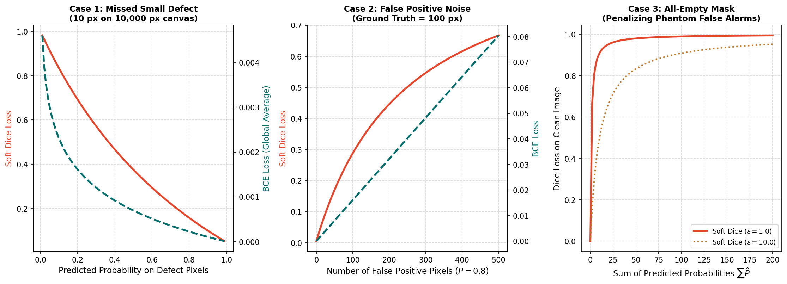

Segmentation Loss Functions: BCE, Dice, & Compound Objectives
In standard computer vision tasks, choosing a loss function is straightforward: classification models use Cross-Entropy, while regression models use Mean Squared Error. In industrial anomaly segmentation, however, standard loss functions fail completely because of extreme spatial class imbalance:
- In our line-scan setting, more than \(97\%\) of all pixels across the dataset belong to defect-free background steel.
- Certain rare anomaly types (such as
defect_b) occupy less than \(0.02\%\) of the total canvas area.
If you train a neural network using standard, unweighted Binary Cross-Entropy, the model discovers a trivial shortcut: predict all zeros everywhere. By predicting that every single pixel is clean background, the model achieves over \(97\%\) pixel-level accuracy while achieving a Dice score of exactly 0.0 on defects!
To force the network to detect hairline anomalies, you must design a loss function that balances pixel-level classification accuracy against global region overlap.
This guide explores Binary Cross-Entropy with Logits, derives the differentiable Soft Dice Loss, explains how they respond to missed defects and false alarms on tiny synthetic matrices, analyzes the compound objective \(\mathcal{L}_{\text{BCE}} + \lambda \mathcal{L}_{\text{Dice}}\), and establishes the critical distinction between your differentiable training loss and your discrete evaluation metric.
1. The Anatomy of Class Imbalance: Why Pixel Accuracy Misleads
Consider a single industrial strip of dimension \(128 \times 800\), containing \(102,400\) pixels.
Suppose the strip contains a small scratch (defect_a) spanning \(50\) pixels.
Let us examine two hypothetical models:
Strip Canvas: 102,400 Pixels | Ground Truth Defect: 50 Pixels (0.049% of Canvas)
Model Alpha (Trivial Background Predictor):
- Predicts 0 on all 102,400 pixels
- Pixel Accuracy: (102,400 - 50) / 102,400 = 99.951%
- Dice Score: 2 * 0 / (0 + 50) = 0.0000 (Completely Useless!)
Model Beta (Real Defect Detector with Slight Jitter):
- Correctly predicts 40 defect pixels, misses 10 defect pixels, predicts 30 false positive pixels
- Pixel Accuracy: (102,320) / 102,400 = 99.922% (Lower accuracy than Model Alpha!)
- Dice Score: 2 * 40 / (70 + 50) = 0.6667 (High Industrial Value!)If your loss function optimizes raw pixel accuracy, the optimizer will actively favor Model Alpha over Model Beta! To train a viable anomaly detector, your objective function must penalize missed foreground pixels much more heavily than background errors.
2. Binary Cross-Entropy with Logits
Binary Cross-Entropy (BCE) measures the cross-entropy between independent Bernoulli distributions at each individual pixel.
Mathematical Formulation
For a ground truth binary target \(y \in \{0, 1\}\) and a predicted probability \(p = \sigma(z) \in (0, 1)\):
The Numerical Stability of Log-Sum-Exp
In naive implementations, students often compute:
# DANGEROUS: Susceptible to underflow and NaN!
probs = torch.sigmoid(logits)
loss = - (targets * torch.log(probs + 1e-7) + (1 - targets) * torch.log(1 - probs + 1e-7))0.0, causing \(\log(0.0) = -\infty\) and yielding NaN gradients.
PyTorch's nn.BCEWithLogitsLoss() avoids this by combining the sigmoid and the log-loss into a single mathematically equivalent expression using the log-sum-exp trick:
This formula is guaranteed to be numerically stable across the entire real number line \((-\infty, +\infty)\).
Positive Weighting (pos_weight)
To counteract the overwhelming background majority, BCEWithLogitsLoss provides a pos_weight parameter (\(w_{\text{pos}} > 1\)):
Setting \(w_{\text{pos}} = 10.0\) scales the loss contribution of positive defect pixels by \(10\times\), preventing background pixels from dominating gradient updates.
3. Soft Dice Loss: Differentiable Overlap Optimization
While BCE evaluates each pixel independently in isolation, the Sørensen–Dice coefficient (the competition's primary evaluation metric) evaluates the global volumetric overlap between the predicted segmentation region \(\hat{Y}\) and the ground truth mask \(Y\):
However, the standard Dice coefficient uses discrete binary masks \(\hat{Y} \in \{0, 1\}\), which require a threshold step function \(\mathbb{I}(p \ge 0.5)\). The step function has a derivative of zero everywhere (and is undefined at the threshold), making it non-differentiable.
The Soft Dice Formulation
To make Dice amenable to backpropagation with gradient descent, Milletari et al. (2016) introduced Soft Dice: replacing discrete binary predictions \(\hat{Y}_i \in \{0, 1\}\) with continuous predicted probabilities \(P_i = \sigma(z_i) \in [0, 1]\):
where \(\epsilon\) (typically \(1.0\)) is a smoothing constant.
Differentiable Soft Dice Flow:
Raw Logit z ──► Sigmoid: P = σ(z) ──► Dot Product with Target: Σ(P * Y) ──► Soft Dice Loss
(Fully Differentiable!)The Crucial Role of the Smoothing Factor \(\epsilon\)
The smoothing constant \(\epsilon\) serves two essential mathematical purposes:
- Division by Zero Protection: If both the prediction and the ground truth are completely empty (\(P = \vec{0}, Y = \vec{0}\)), the fraction resolves to \(\frac{0 + \epsilon}{0 + \epsilon} = 1.0\), yielding a loss of \(1 - 1.0 = \mathbf{0.0}\).
-
Gradient Regularization on Clean Images: When an image has zero defects (\(Y_i = 0\) for all pixels):
\[\mathcal{L}_{\text{Dice}}(P, \vec{0}) = 1 - \frac{\epsilon}{\sum_i P_i + \epsilon} = \frac{\sum_i P_i}{\sum_i P_i + \epsilon}\]Notice that when \(Y = \vec{0}\), Soft Dice acts as a smooth, nonlinear \(L_1\)-like penalty on false positive probabilities! Any positive probability mass \(\sum P_i\) pushes the loss above 0.
4. How BCE and Dice Respond to Common Failure Modes
To understand why practitioners combine both losses, let us compare how BCE and Soft Dice respond to three realistic defect failure modes on a tiny synthetic canvas of \(16\) pixels (\(4 \times 4\)).

Figure 5.1: Comparative behavior of BCE and Soft Dice under three operational scenarios: missed small defects, scattered false alarm noise, and clean empty masks.Case 1: A Missed Small Defect (1 Defect Pixel on 16-Pixel Canvas)
- Ground Truth: \(1\) positive pixel, \(15\) background pixels.
- Prediction: The model outputs \(P = 0.10\) on the defect pixel (a severe false negative), and \(P = 0.05\) on background pixels.
Observation:
- BCE produces a tiny loss value (\(0.192\)) because 15 background pixels were predicted reasonably well.
- Soft Dice produces a massive loss penalty (\(0.579\)) because the overlap on the defect was near zero.
- Takeaway: Soft Dice strongly penalizes missed small defects where BCE remains indifferent.
Case 2: Scattered False Positive Noise (4 TP + 4 FP)
- Ground Truth: \(4\) positive pixels.
- Prediction: Model correctly predicts all \(4\) defect pixels with \(P = 0.95\), but also predicts 4 false positive background pixels with \(P = 0.95\).
Observation:
- BCE produces a high loss (\(0.783\)) because predicting \(P=0.95\) on background carries a severe individual cross-entropy penalty (\(-\log(0.05) \approx 2.99\)).
- Soft Dice produces a moderate loss (\(0.317\)) because the numerator still captured strong true positive overlap (\(4 \times 0.95\)).
- Takeaway: BCE acts as a strong anchor against scattered false positive speckles.
Case 3: Completely Empty Clean Image (\(Y = \vec{0}\))
- Ground Truth: \(0\) defect pixels everywhere.
- Prediction: Model outputs low background noise (\(P = 0.12\)) across the entire \(16\)-pixel canvas (\(\sum P_i = 1.92\)).
Observation:
- Soft Dice heavily penalizes accumulated background probability volume on clean sheets, pushing the model toward zero predictions on empty images.
5. The Compound Loss: Combining BCE and Soft Dice
Because BCE and Soft Dice possess complementary strengths, standard industry practice combines them into a compound loss objective:
Complementary Roles in Compound Loss:
BCE Term: Provides smooth, well-conditioned pixel gradients; anchors background suppression.
Soft Dice Term: Directly optimizes regional overlap; protects rare, small defect boundaries.The Role of the Balancing Coefficient \(\lambda\)
- If \(\lambda \ll 1\) (BCE-dominated): Gradients are smooth and stable, but the model may suffer recall drops on small scratches.
- If \(\lambda \gg 1\) (Dice-dominated): The model focuses heavily on foreground overlap, but training can become volatile, and predictions may develop noisy borders.
- Do not blindly adopt a fixed \(\lambda = 1.0\): You must inspect training logs to ensure neither term overwhelms the other. In standard multi-label setups, \(\mathcal{L}_{\text{BCE}}\) typically starts around \(0.6\text{--}0.8\), while \(\mathcal{L}_{\text{Dice}}\) starts around \(0.9\text{--}1.0\).
6. Reduction Strategies: Pixel vs. Batch vs. Class
How should loss values be averaged across pixels, images, and defect classes?
1. Spatial Reduction
BCEWithLogitsLoss(reduction='mean')averages across all pixels in the batch (\(B \times H \times W\)).
2. Dice Batch Reduction: Image-Level vs. Global Batch
-
Image-Level Dice (Default in Segmentation): Compute Soft Dice separately for each image \(b \in \{1..B\}\), then average:
\[\mathcal{L}_{\text{Dice}} = \frac{1}{B} \sum_{b=1}^{B} \mathcal{L}_{\text{Dice}}(P_b, Y_b)\] -
Global Batch Dice: Sum intersections and sums across the entire mini-batch before dividing:
\[\mathcal{L}_{\text{Dice}} = 1 - \frac{2 \sum_{b, i} P_{b, i} Y_{b, i} + \epsilon}{\sum_{b, i} P_{b, i} + \sum_{b, i} Y_{b, i} + \epsilon}\]Trade-off: Global batch Dice is less volatile on tiny defects, but image-level Dice aligns more closely with per-image competition scoring.
3. Class-Balanced Reduction
In multi-label setups, common defects like defect_c occur in far more batches than rare defects like defect_b:
- Unweighted Macro Average: Average across all 4 classes: \(\frac{1}{4} \sum_{k=1}^4 \mathcal{L}_k\).
-
Class Weighting: Assign explicit weights \(w_k\) to underrepresented defect classes:
\[\mathcal{L}_{\text{total}} = \sum_{k=a}^d w_k \left( \mathcal{L}_{\text{BCE}, k} + \lambda \mathcal{L}_{\text{Dice}, k} \right)\]
7. The Critical Boundary: Training Loss vs. Validation Metric
One of the most frequent conceptual mistakes in competitive machine learning is conflating the training loss function with the validation evaluation metric.
Training Loss (Continuous, Smooth, Differentiable):
Input: Unbounded Logits Z ──► Soft Activations P ──► Continuous Loss Value
Requirement: Must have non-zero, informative gradients everywhere (d L / d z ≠ 0).
Validation Metric (Discrete, Non-Differentiable, Step-Based):
Input: Probabilities P ──► Threshold τ ──► Binary Mask {0, 1} ──► Area Filter ──► Discrete Dice
Requirement: Evaluates the exact operational decision rule of the competition.The Invalidation Trap: Thresholding Inside Training Loss
Never threshold probabilities before feeding them into a loss function:
# FATAL ERROR: Non-differentiable step function breaks backpropagation!
binary_preds = (torch.sigmoid(logits) > 0.5).float()
loss = 1.0 - (2 * (binary_preds * targets).sum() / (binary_preds.sum() + targets.sum()))
loss.backward() # Gradients are ZERO everywhere! Model will not learn!8. Comparative Decision Matrix
| Loss Formulation | Input Head Requirements | Target Format | Primary Strength | Primary Weakness |
|---|---|---|---|---|
| BCEWithLogitsLoss | Raw Logits \([B, 4, H, W]\) | Binary Float \(\{0, 1\}\) | Smooth gradients; excellent background control. | Vulnerable to foreground class imbalance. |
| Soft Dice Loss | Probabilities \(P \in [0, 1]\) | Binary Float \(\{0, 1\}\) | Directly optimizes region overlap; immune to pixel imbalance. | Noisy gradients on small batches; can drift on empty masks. |
| Compound BCE + Dice | Logits & Probabilities | Binary Float \(\{0, 1\}\) | Best of both worlds: balances pixel precision with region overlap. | Requires tuning the balancing weight \(\lambda\). |
| Categorical Cross-Entropy | Raw Logits \([B, 5, H, W]\) | Integer Class \([B, H, W]\) | Enforces strict mutual exclusivity across classes. | Requires background class; causes data loss if labels overlap. |
9. Common Implementation Pitfalls and Diagnostics
| Bug / Pitfall | Root Cause | Observable Symptom | Practical Diagnostic |
|---|---|---|---|
| Applying Sigmoid before BCEWithLogits | Passing probabilities into nn.BCEWithLogitsLoss(). |
Loss plateaus around \(\approx 0.693\); model fails to converge. | Check input range: logits must span \((-\infty, +\infty)\), not \([0, 1]\). |
| Omitting Smoothing \(\epsilon\) | Soft Dice denominator has \(\epsilon = 0\). | Loss explodes to NaN on the first clean, defect-free training image. |
Always set \(\epsilon \ge 1.0\) in the Soft Dice formula. |
| Target Dtype Mismatch in BCE | Passing torch.long targets to BCEWithLogitsLoss. |
RuntimeError: result type Float can't be cast to Long. |
Ensure targets are torch.float32. |
| Unbalanced Loss Scales | BCE is \(\approx 0.05\) while Dice is \(\approx 0.95\). | Gradients from Dice completely overwhelm BCE, causing unstable optimization. | Log both loss components separately to W&B; adjust \(\lambda\) to balance magnitudes. |
10. Ungraded Try-It Activity: Compute BCE and Soft Dice by Hand
Work through this small numerical calculation to verify your understanding:
Suppose you have a tiny \(2 \times 2\) image patch (\(4\) pixels total):
- Ground Truth: \(Y = \begin{bmatrix} 1 & 0 \\ 0 & 0 \end{bmatrix}\) (exactly 1 defect pixel at top-left).
- Predicted Probabilities: \(P = \begin{bmatrix} 0.8 & 0.2 \\ 0.1 & 0.1 \end{bmatrix}\).
- Compute the intersection \(\sum P_i Y_i\).
- Compute the sum of predicted probabilities \(\sum P_i\) and the ground truth sum \(\sum Y_i\).
-
Calculate Soft Dice Loss with smoothing constant \(\epsilon = 1.0\):
\[\mathcal{L}_{\text{Dice}} = 1 - \frac{2 \sum P_i Y_i + 1.0}{\sum P_i + \sum Y_i + 1.0}\] -
Compute the pixel-wise BCE loss for the top-left pixel (\(y=1, p=0.8\)) and top-right pixel (\(y=0, p=0.2\)).
Click here to view the worked solution
-
Intersection:
\[\sum P_i Y_i = (0.8 \times 1) + (0.2 \times 0) + (0.1 \times 0) + (0.1 \times 0) = \mathbf{0.80}\] -
Cardinalities:
\[\sum P_i = 0.8 + 0.2 + 0.1 + 0.1 = \mathbf{1.20}\]\[\sum Y_i = 1 + 0 + 0 + 0 = \mathbf{1.00}\] -
Soft Dice Loss:
\[\mathcal{L}_{\text{Dice}} = 1 - \frac{2(0.80) + 1.0}{1.20 + 1.00 + 1.0} = 1 - \frac{1.60 + 1.0}{3.20} = 1 - \frac{2.60}{3.20} = 1 - 0.8125 = \mathbf{0.1875}\] -
Pixel-wise BCE:
- Top-left (\(y=1, p=0.8\)): \(-\log(0.8) \approx \mathbf{0.2231}\)
- Top-right (\(y=0, p=0.2\)): \(-\log(1 - 0.2) = -\log(0.8) \approx \mathbf{0.2231}\) Both pixels contribute equally to the BCE loss!
To run comparative loss simulations on synthetic masks using PyTorch on CPU, run:
👉 docs/milestone_3_student_guide/examples/toy_loss_behavior.py
11. Primary Sources & Further Reading
- Milletari, F., Navab, N., & Ahmadi, S. A. (2016). V-Net: Fully Convolutional Neural Networks for Volumetric Medical Image Segmentation. 3DV. arXiv:1606.04797. Introduced the differentiable Soft Dice loss for imbalanced segmentation.
- Lin, T. Y., Goyal, P., Girshick, R., He, K., & Dollár, P. (2017). Focal Loss for Dense Object Detection. ICCV. arXiv:1708.02002. Formulated dynamic scaling to prevent easy negative background dominance.
- Sudre, C. H., et al. (2017). Generalised Dice overlap as a deep learning loss function for highly unbalanced segmentations. DLMIA. arXiv:1707.03237. Extended Dice loss with class-frequency weighting.